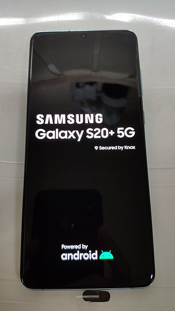

Galaxy S20
Samsung Galaxy S20 is a line of Android-based smartphones designed, developed, marketed, and manufactured by Samsung Electronics as part of its Galaxy S series.[2][3] They collectively serve as the successor to t he Galaxy S10 and were unveiled at Samsung's Galaxy Unpacked event on 11 February 2020.[4][5] The S20 line consists of flagship Galaxy S20 and Galaxy S20+ models differentiated primarily by screen size, as well as a larger camera-focused model, the Galaxy S20 Ultra.[6] Key upgrades over the previous model, in addition to improved specifications, include a display with a 120 Hz refresh rate, an improved camera system supporting 8K video recording (7680×4320) and a super-resolution zoom of 30–100×, depending on the model.[7]
